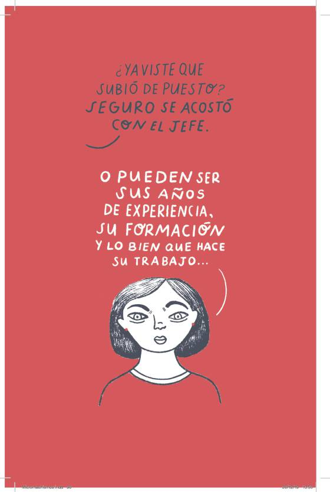

What is Machismo?

There are many definitions of the word machismo. According to Dictionary.com, machismo is a strong or exaggerated sense of manliness; an assumptive attitude that strength, courage, and entitlement to dominate are attributes of masculinity. According to the website of the Mexican government, machismo is made up of certain behaviors and beliefs that promote, reproduce and reinforce various forms of discrimination against women. It is further built through the polarization of roles and stereotypes that define males from females. Many believe that this term was invented my Mexicans, however it is a term used in various parts of the world. The image above states someone saying, "Have you heard that she got promoted? She probably slept with the boss," while the girl states, "Or it could be my years of experience, my values, and how well I do my job."